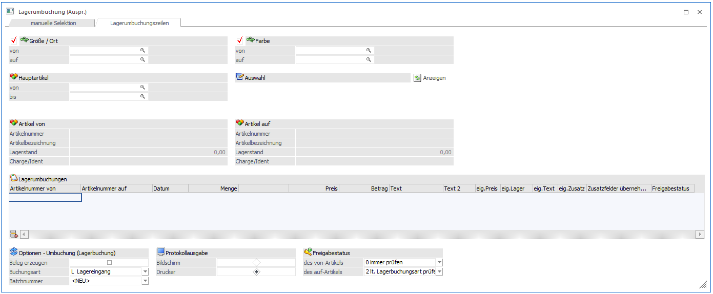
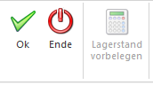

Einschränkungen
Ø Ausprägung 1
Wird hier die Checkbox aktiviert, dann kann in den nachfolgenden Feldern
Ø von - bis
eingestellt werden, von welcher Ausprägung auf welche Ausprägung umgebucht werden soll. Statt der Ausprägung 1 wird natürlich der Name der Ausprägung angezeigt, so wie sie im Datenstand angelegt ist (in unserem Fall z.B. Größe / Ort).
Ø Ausprägung 2
Wird hier die Checkbox aktiviert, dann kann in den nachfolgenden Feldern
Ø von - bis
eingestellt werden, von welcher Ausprägung auf welche Ausprägung umgebucht werden soll. Statt der Ausprägung 2 wird natürlich der Name der Ausprägung angezeigt, so wie sie im Datenstand angelegt ist (in unserem Fall z.B. Farbe).
Diese beiden Optionen können wahlweise oder auch gemeinsam aktiviert werden. Welche Variante verwendet wird, hängt davon ab, wie (mit welchen Ausprägungen) die Artikel angelegt sind.
Beispiel:
Umbuchung eines Ersatzteiles vom Lagerort Wien, Regal 4 auf Lagerort Innsbruck, Regal 1:
Es müssen beide Checkboxen aktiviert werden, und die entsprechenden Ausprägungen eingegeben werden.
Umbuchung von Fahrrädern vom Lagerort Wien auf Lagerort Innsbruck:
Bei Artikeln, die nur eine Ausprägung verwenden, wird wie bisher nur eine Ausprägung umgebucht, auch wenn beide Checkboxen aktiviert sind.
Ø Hauptartikel von - bis
Hier können auch noch die Hauptartikel eingeschränkt werden, für die eine Umbuchung vorgenommen werden soll. Wird eine Einschränkung vorgenommen, dann wird neben dem Eingabefeld die Artikelbezeichnung angezeigt. Durch einen Klick auf die Bezeichnung kann eine Drill-Down-Funktion ausgelöst werden. Welche Aktion dabei ausgelöst wird, kann über die rechte Maustaste festgelegt werden (die letzte Einstellung wird gespeichert), wobei folgende Optionen zur Verfügung stehen:
ü Aufruf Info
Es wird der Artikel
in der Artikelinfo im Programm WinLine INFO geöffnet.
ü Artikelstamm
Der Artikel wird
in der WinLine FAKT im Artikelstamm geöffnet.
ü Statistik
Es wird die
Artikelstatistik in der WinLine FAKT geöffnet.
ü Artikelbedarfsvorschau
Es wird
die Artikelbedarfsvorschau des Artikels aufgerufen, wobei dort auch optional die
Ausprägungen angezeigt werden können.
Ø Anzeigen-Button
Wenn der Anzeigen-Button gedrückt wird, werden anhand der vorher betätigten Selektionen alle vorhandenen Lagerumbuchungszeilen angezeigt. Die Eingabefelder für Ausprägung1 und 2 bzw. für die Hauptartikelnummer können zur Selektion verwendet werden. Die Ausprägungseingabefelder müssen aber nicht (wie im 1. Register "manuelle Selektion") eingegeben werden. Wenn keine Lagerumbuchungszeilen nach den Selektionen vorhanden sind, wird eine entsprechende Meldung ausgegeben.
Tabelle
In der Tabelle werden alle Artikel gemäß den Einstellungen der ersten Seite angezeigt, bzw. können auch noch neue Artikel hinzugefügt werden, wobei folgende Informationen ersichtlich sind bzw. bearbeitet werden können:
Ø Artikelnummer von
Es wird die Artikelnummer angezeigt, von der die Menge abgebucht wird.
Ø Artikelnummer auf
Es wird die Artikelnummer angezeigt, auf die die Menge gebucht werden soll.
Ø Datum
Als Buchungsdatum wird das Auswertedatum der WinLine vorgeschlagen.
Ø Menge / Menge 2
In diesem Feld wird die umzubuchende Menge eingegeben. Wird der Artikel in 2 Mengen geführt, steht auch das Feld Menge 2 zur Verfügung.
Ø Preis
Der Preis wird gemäß der Einstellung der Lagerbuchungsart vorgeschlagen und kann ggf. geändert werden.
Ø Betrag
Der Betrag errechnet sich aus Menge * Preis und kann nicht verändert werden.
Ø Text / Text 2
Hier können noch 2 Umbuchungstexte hinterlegt werden. Diese Texte werden dann in die Artikeljournalzeile mit übernommen.
Hinweis
Da grundsätzlich keine neuen Artikel beim Umbuchen von Lagerumbuchungszeilen entstehen, sind die restlichen Felder in der Tabelle für eigene Stammdaten-Einstellungen nicht relevant.
Optionen für die Lagerbuchung
Ø Beleg erzeugen
Wenn diese Checkbox aktiviert wird, wird beim Druck des OK-Buttons die Lagerumbuchung als Lieferschein erzeugt (Menge im Minus beim abgebenden Lager und Menge im Plus beim empfangenden Lager). Die Felder "Buchungsart" bzw. "Batchnummer" sind automatisch inaktiv bei Anwahl der Checkbox. Zusätzlich ist die Checkbox-Einstellung benutzerspezifisch gespeichert. Als Personenkonto für den Beleg wird jenes Konto verwendet, das bei den Ausprägungen hinterlegt ist ("Fremdlager/Konto" bei der Ausprägung in Fenster "Ausprägungen verwalten"). Eine weitere Voraussetzung dafür dass ein Beleg erzeugt werden kann ist, dass eine Lagerbuchungsart vom Typ "Fakturierung" verwendet wird, in der der Buchungsschlüssel L+ lautet. Diese muss wiederum in einer Belegart (z.B. Einkaufsbelegart) hinterlegt sein.
Wenn der Beleg (bzw. die Belege) erfolgreich erzeugt wurde(n), verläuft sich der weitere Belegdruck nach zwei Varianten:
ü Wenn nur ein Beleg erzeugt wurde, dann öffnet sich der Beleg automatisch in Belegerfassen.
ü Wenn mehrere Belege erzeugt wurden, erscheint die folgende Meldung:
Wenn Sie JA wählen, werden die Belege automatisch per Belegdruck gedruckt. Wenn NEIN gewählt wird, werden die gerade erzeugten Belege im Belegmanagement angezeigt, Von dort aus können die Belege weiter verarbeitet werden.
Ø Buchungsart
Für die Lagerumbuchung können Sie eine der im Programm vordefinierten Buchungsarten verwenden bzw. abändern oder eine neue Buchungsart anlegen. In der Buchungsart können Sie auch festlegen, zu welchem Preis die Warenumbuchung durchgeführt werden soll.
Hinweis:
Dieses Feld ist inaktiv wenn Checkbox "Beleg erzeugen" aktiviert ist. Die eingestellte Buchungsart wird allerdings bei der Preisfindung im Beleg angewendet.
Ø Batchnummer
Für die Journalzeilen, die im Zuge der Lagerumbuchung erzeugt werden, kann eine Batchnummer vergeben werden. Diese Batchnummer kann auch dazu verwendet werden, um Umbuchungen auch noch nachträglich Nachverfolgen zu können. Bei der Vergabe der Batchnummer gibt es 2 Varianten:
ü <NEU>
Wenn die Option NEU
verwendet wird, dann wird im Zuge der Umbuchung eine neue Batchnummer vom
Programm vergeben, wobei diese aus der Lagerbuchungsart und dem Datum/Uhrzeit
der Durchführung zusammengestellt wird. Beispiel: L31102006103342 bedeutet, dass
am 31.10.2006 um 10 Uhr 33 und 42 Sekunden eine Lagerumbuchung mit der
Lagerbuchungsart L durchgeführt wurde.
ü Bestehende Batchnummer
Wurden
bereits Batchnummer vergeben, so kann aus der Auswahllistbox eine bestehende
Batchnummer ausgewählt werden. Damit können dann z.B. mehrere
Lagerumbuchungsvorgänge in einer Batchnummer zusammengefasst werden.
Protokollausgabe
Im Zuge der Lagerumbuchung wird auch ein Buchungsprotokoll ausgegeben, entweder eine Liste der Lagerbuchungen oder eine Liste der erzeugten (bzw. nicht erzeugten) Belege. Mit dem Radiobutton erfolgt die Ausgabe am Bildschirm oder am Drucker. Standardmäßig erfolgt die Ausgabe auf den Drucker, wobei die Einstellung benutzerspezifisch gespeichert wird.
Freigabestatus
Ø des von-Artikels
Aus der Auswahllistbox kann gewählt werden, wie der Artikel geprüft werden soll, von dem die Menge abgebucht werden soll. Dabei stehen folgende Optionen zur Auswahl:
ü 0 - immer prüfen
Der
Freigabestatus des abgebenden Artikels wird immer geprüft. Ist der Artikel z.B.
nicht freigegeben, wird er in der Tabelle nicht angezeigt.
ü 1 - nie prüfen
Der
Freigabestatus des abgebenden Artikels wird nie geprüft, d.h. der Artikel wird
immer angezeigt.
ü 2 - lt. Lagerbuchungsart
prüfen
Der Freigabestatus wird gemäß der Einstellung in der Lagerbuchungsart
geprüft.
Ø des auf-Artikels
Aus der Auswahllistbox kann gewählt werden, wie der Artikel geprüft werden soll, auf den die Menge zugebucht werden soll. Dabei stehen folgende Optionen zur Auswahl:
ü 0 - immer prüfen
Der
Freigabestatus des empfangenden Artikels wird immer geprüft. Ist der Artikel
z.B. nicht freigegeben, wird er in der Tabelle nicht angezeigt.
ü 1 - nie prüfen
Der
Freigabestatus des empfangenden Artikels wird nie geprüft, d.h. der Artikel wird
immer angezeigt.
ü 2 - lt. Lagerbuchungsart
prüfen
Der Freigabestatus wird gemäß der Einstellung in der Lagerbuchungsart
geprüft.
Einmal vorgenommene Einstellungen der Optionen werden benutzerspezifisch gespeichert.
Buttons

Ø OK-Button
Durch Drücken der F5-Taste oder Anwählen der OK-Taste werden die Umbuchungen durchgeführt.
Ist ein Artikel (ohne Chargeninformation!) in einer Ausprägung auf die gebucht werden sollte noch nicht angelegt, wird diese im Zuge der Buchung automatisch angelegt. Dabei werden die Werte für neu angelegte Ausprägungen aus den Feldern "Artikeluntergruppe", "alternative Artikelr.1", usw. von jener Ausprägung übernommen, von der umgebucht wurde (nicht Hauptartikel!).
Zusätzlich dazu
Ø ENDE-Button
Durch Drücken der ESC-Taste wird das Fenster geschlossen, es werden keine Buchungen durchgeführt.
Ø Lagerstand vorbelegen
Dieser Button ist deaktiviert in diesem Register.